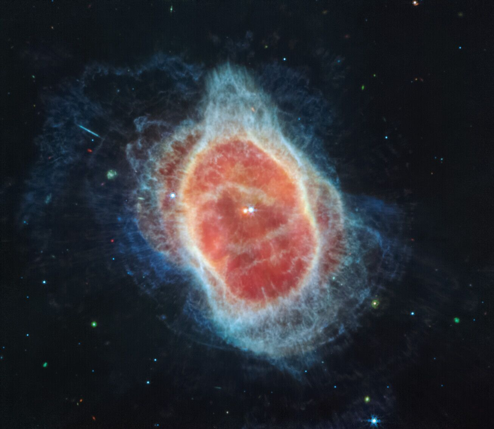
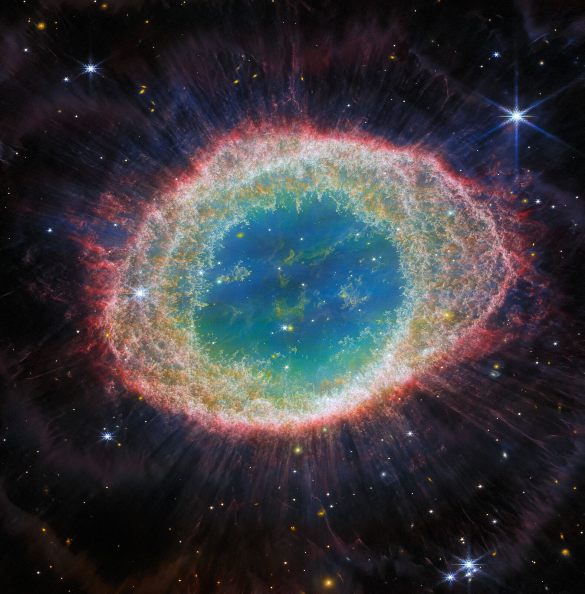
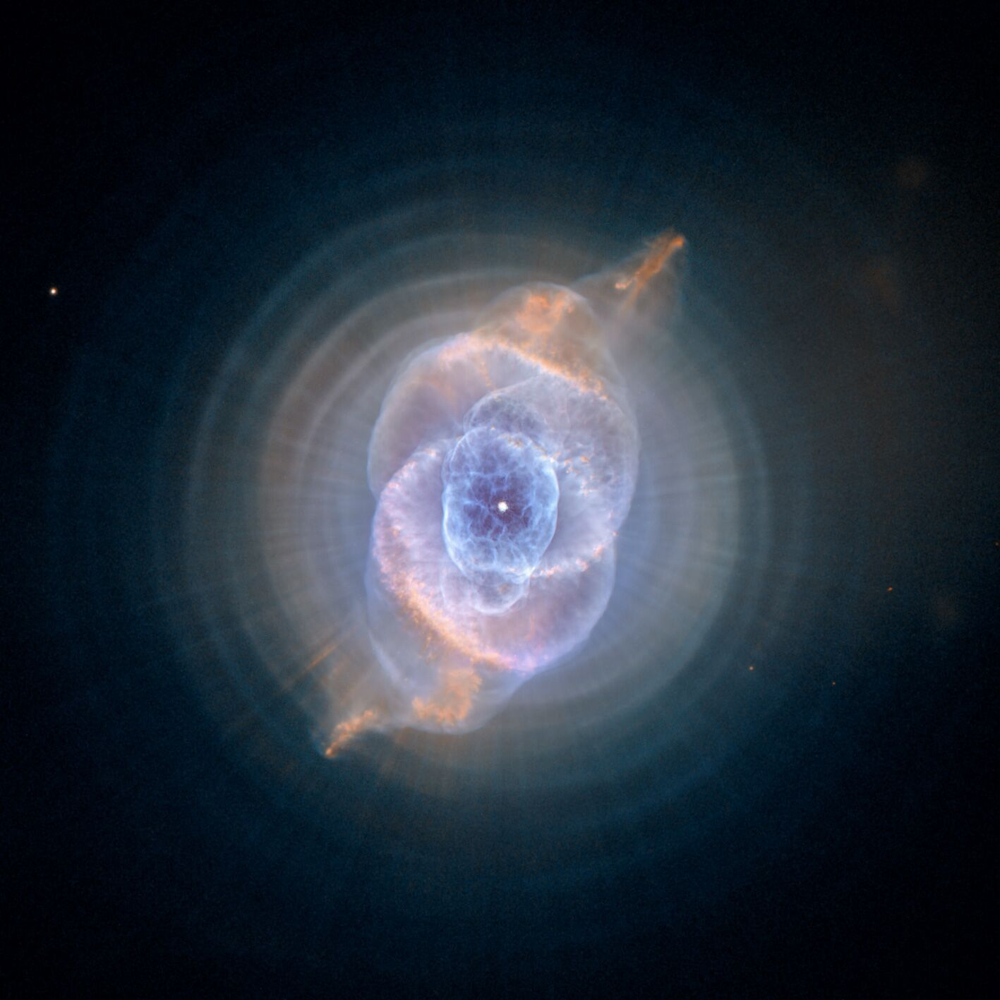
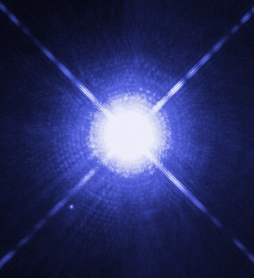
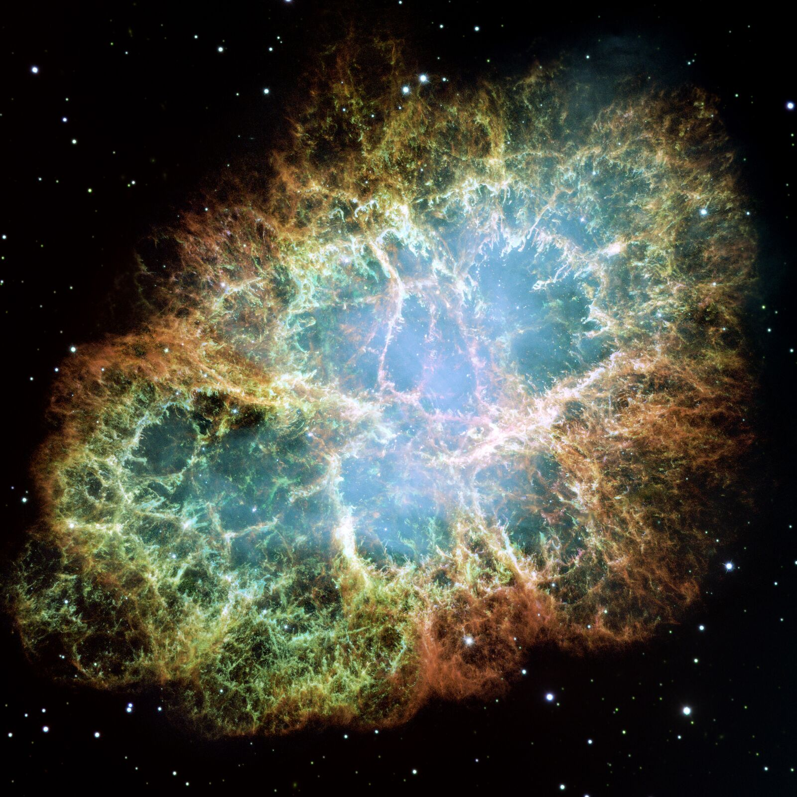
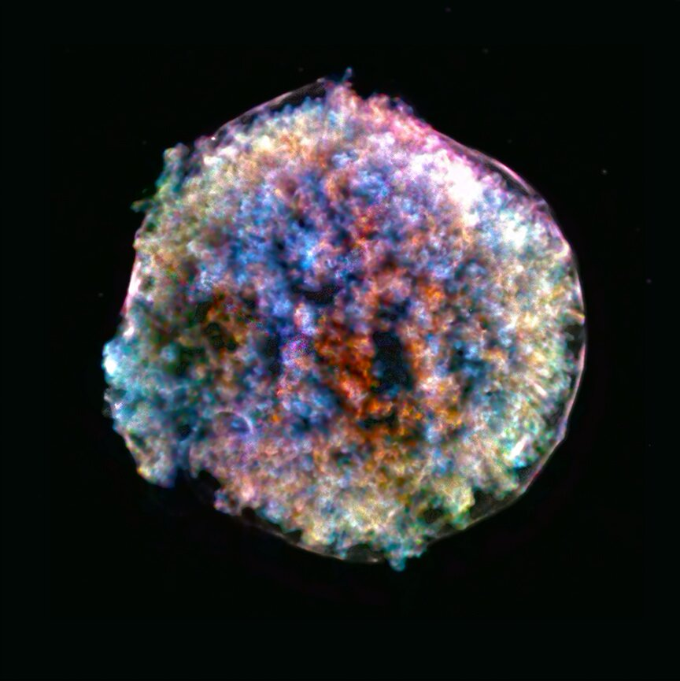
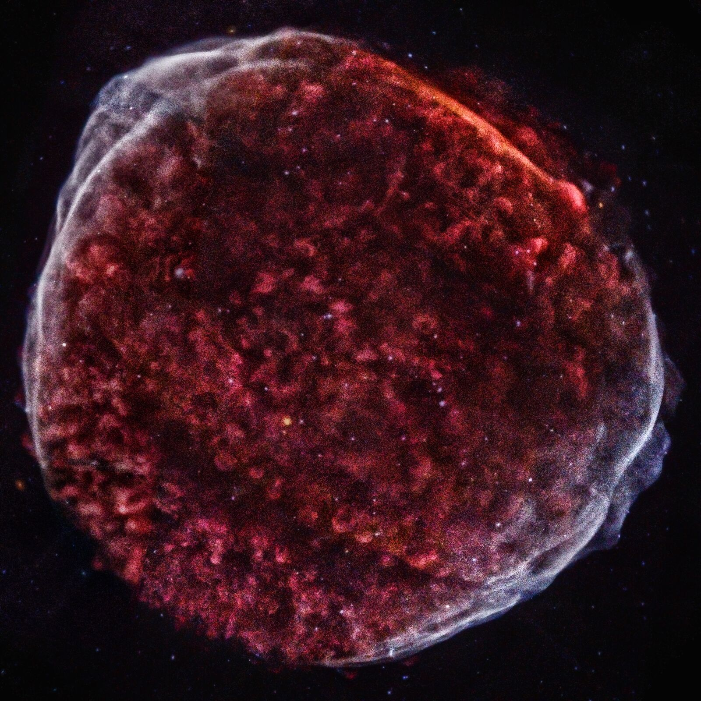
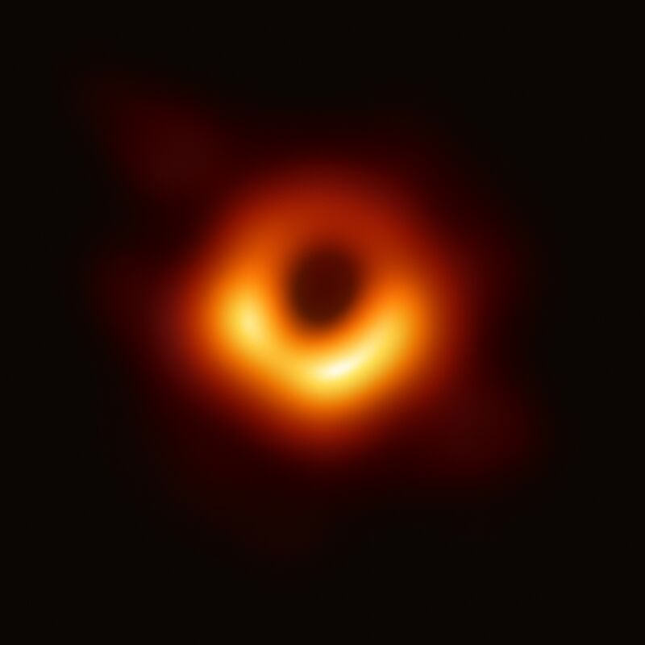
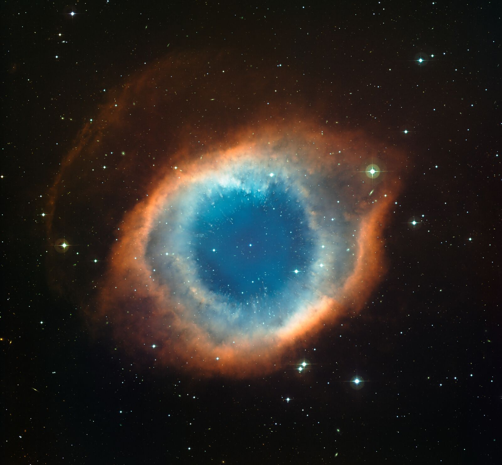

Stella Nova · Space and gravity
The Chandrasekhar limit
Why no white dwarf can weigh more than about 1.4 Suns, worked out from four ingredients: gravity, Pauli's exclusion principle, the speed of light and the mass of a proton.
When a star like the Sun runs out of fuel, its core shrinks into a white dwarf: about a Sun's worth of mass in a ball the size of the Earth. Nothing burns inside it. What holds it up is a rule of quantum mechanics: no two electrons may share the same state. In 1930 a nineteen-year-old Subrahmanyan Chandrasekhar showed that this support has a ceiling. Add mass, and the electrons are squeezed until they move close to the speed of light. From then on their pressure cannot keep up with gravity, and the star has no size at which it can rest.
This page builds that argument one step at a time. The charts are not pictures: each one solves the equations in your browser when you move it.
1A star is a balance
Every layer of a star carries the weight of all the layers above it. Cut a thin shell out of a star at radius r. Gravity pulls it inward with the mass m(r) inside it. The pressure on its inner face is higher than on its outer face, and the difference pushes it out. If the two did not cancel, the shell would move within minutes. Stars last billions of years, so they are in hydrostatic equilibrium:
Integrate it once in rough form and you get the pressure a star of mass M and radius R needs at its centre: Pc ~ G M² / R⁴. Squeeze the star and the pressure it needs rises steeply.
In the Sun that pressure is thermal: gas at fifteen million kelvin, kept hot by hydrogen fusion. Thermal pressure lasts only as long as something replaces the heat that leaks away. When the fuel runs out the core loses heat and shrinks. A core like the Sun's burns helium to carbon and oxygen, and then it is too light ever to become hot enough to burn carbon.
The outer layers drift off as a planetary nebula, lit for a few tens of thousands of years by the ultraviolet light of the bare core. The core is the white dwarf. It has no fuel, it will cool for the rest of time, and yet it does not shrink. Something other than heat holds it up.



Sirius B

Sirius, the brightest star in the night sky, wobbles. In 1844 Friedrich Bessel worked out that it must orbit an unseen companion; in 1862 Alvan Clark saw it. In 1915 Walter Adams took its spectrum and found it hot and white, yet ten thousand times fainter than Sirius A. A star that hot and that faint must be tiny.
| Mass, from the 50-year orbit | 1.018 ± 0.011 M☉ |
| Radius | 5,630 km (0.008098 R☉), smaller than the Earth |
| Mean density | 2.7 × 10⁶ g/cm³, or 2.7 tonnes in a sugar cube |
| Surface gravity | about 430,000 times the Earth's |
| Surface temperature | about 25,000 K |
| Gravitational redshift | 80 km/s |
Mass: Bond et al. 2017. Radius and redshift: Joyce et al. 2018.
2Pauli's rule makes pressure
An electron in a box of side L behaves as a wave that must fit the box, so its momentum comes in steps of 2πħ/L along each axis. Each allowed momentum is one cell of momentum space, and each cell holds two electrons, one with spin up and one with spin down. That is the Pauli exclusion principle (1925), and electrons obey it without exception.
Put N electrons in the box at zero temperature. They take the lowest cells first, so they fill a ball in momentum space up to the Fermi momentum pF. Count the cells: the volume of the ball over the volume of one cell, times two.
So pF grows as n1/3: halve the side of the box and the top momentum doubles. Electrons that move push on the walls of their box; this is degeneracy pressure. It needs no heat, so it does not drain away as the star cools.
Is zero temperature a fair picture? It is if the Fermi energy is far above the thermal energy kT. At the mean density of Sirius B the Fermi energy is about 260 keV; a core temperature of order 10⁷ K gives kT ≈ 1 keV. In that sense the electrons are as cold as electrons can be.
3Slow electrons: a star that shrinks as it grows
Pressure is a flow of momentum: roughly n × p × v. For slow electrons v = p / me, so P ~ n pF² / me, and with pF ∝ n1/3:
The electrons give the pressure, but the ions give the weight. Each electron comes with μe mu of mass, where μe = 2 for helium, carbon and oxygen, so ρ = μe mu ne. A gas with P = K ρ1+1/n is called a polytrope of index n; this one has n = 1.5.
Now balance it against gravity. With ρ ~ M / R³ the pressure scales as M5/3 / R⁵, while gravity needs G M² / R⁴:
There is always a solution. A heavier star is smaller and denser, and its electrons are pushed to higher momentum, but some radius always balances it. On this law alone there is no limit. Ralph Fowler found as much in 1926, the year Fermi-Dirac statistics was born.
4Fast electrons: the key step
Squeeze hard enough and pF passes mec. An electron's energy is √(p²c² + me²c⁴). For p ≪ mec the kinetic part is p²/2me; for p ≫ mec it is pc. The speed stops growing at c, so the momentum flow becomes n × p × c instead of n × p²/m:
The exponent falls from 5/3 to 4/3. That looks like a small change. It decides everything, and the cleanest way to see why is the energy argument Lev Landau gave in 1932.
Take N electrons in a ball of radius R. Each has momentum of about pF ~ ħ N1/3/R. If they are relativistic, each carries energy pFc, so all of them together carry about N4/3ħc/R. Gravity contributes −G M²/R. Both scale as 1/R:
If the bracket is positive, E rises toward R = 0, so the star does not shrink that far. At large R the electrons slow down, their energy falls off as 1/R², faster than gravity's 1/R, and E turns negative. Between the two lies a minimum: a stable white dwarf. If the bracket is negative, E falls without end as R goes to zero. Shrinking always releases energy, and nothing stops it. The sign flips at one mass, because N² grows faster than N4/3:
The radius has dropped out. The limit is built from ħ, c, G and the mass of a proton, and nothing else.
5The exact answer
Scaling gives the form of the limit. To get the number, solve the star: hydrostatic balance plus the equation of state, from the centre to the surface. For a polytrope, put ρ = ρcθⁿ and r = aξ into the balance equation. Everything about the star then folds into one equation, published by Lane in 1870 and by Emden in 1907:
The first zero ξ₁ is the surface, and ωn = −ξ₁²θ′(ξ₁) sets the mass. For n = 3, the relativistic gas, the central density cancels out of the mass: every n = 3 star has the same mass, whatever its size. That mass is the limit:
With ω₃ = 2.018236 from the solver above and μe = 2, it gives 1.456 M☉. Chandrasekhar wrote the formula with the hydrogen mass mH in place of mu and quoted 5.76/μe² with the constants of his day; that is where the familiar 1.44 comes from. The mass per electron of carbon-12 is exactly 2 mu, so mu is the right choice for a carbon-oxygen dwarf.
A real white dwarf is neither n = 1.5 nor n = 3: its outer layers have slow electrons, its centre fast ones. Chandrasekhar's 1935 solution uses the exact pressure of a zero-temperature electron gas at any speed, with x = pF / mec:
With y² = 1 + x², y = y₀φ and r = αη, the balance becomes his white-dwarf equation. One number, the central x, picks the star:
The page integrates this equation with RK4 for 140 central densities when it loads; the result is the curve in the opening figure. At low central density it follows the n = 1.5 law. As the central density grows without limit, the star turns into an n = 3 polytrope, the mass climbs to MCh and the radius goes to zero. There are no white dwarfs beyond that line, at any radius.
Which number: 1.46, 1.44 or 1.39?
| 1.456 | The ideal cold formula with today's constants, mu and μe = 2. The curve on this page ends here. |
| 1.44 | Chandrasekhar's own coefficient, 5.76/μe², written with mH and older constants. The number in most textbooks. |
| about 1.40 | Adds the electrostatic energy of the ion lattice, which lowers the pressure by a few percent (Salpeter 1961). |
| about 1.38–1.39 | Adds general relativity, which makes the star unstable at a finite central density, and electron capture. In a carbon-oxygen dwarf, carbon ignites near 2 × 10⁹ g/cm³ before that point; the cold model reaches that density at 1.396 M☉. |
The last two rows are approximate values from the literature, not computed here.
The answer to "why" is the same in every row: the electrons in the core become relativistic, the pressure exponent falls to 4/3, and gravity, which never weakens, wins.
6Past the limit
A core that crosses the line has three ways out: it burns, it turns into neutrons, or nothing at all stops it.
Electron capture. As the core shrinks, the Fermi energy climbs to several MeV. Then it pays for an electron to merge with a proton, p + e⁻ → n + ν. Each capture removes an electron and its pressure, so the core shrinks faster and the captures speed up. In an oxygen-neon core this happens near 10¹⁰ g/cm³ (1.433 M☉ in the cold model). In the iron core of a massive star it happens when the core grows to its own Chandrasekhar mass.
Neutron stars. The collapse stops only at nuclear density, about 3 × 10¹⁴ g/cm³: some 1.4 M☉ in a ball 12 km in radius. Neutrons are fermions too, and their degeneracy pressure, with the repulsion of the strong force, holds the star up. Neutrons meet the same wall at a higher mass, the Tolman-Oppenheimer-Volkoff limit, about 2.2 to 2.3 M☉ in current estimates. The heaviest accurately weighed pulsar, PSR J0740+6620, has 2.08 ± 0.07 M☉.

Black holes. Above the TOV limit no known pressure is enough. In general relativity pressure itself has weight, so pushing harder adds to gravity. The core falls inside its Schwarzschild radius rs = 2GM/c², 7 km for 2.5 M☉, and becomes a black hole.
Type Ia supernovae
A carbon-oxygen white dwarf that gains mass from a companion is squeezed and heated as it nears MCh. Carbon ignites at its centre. In degenerate matter the pressure hardly depends on temperature, so the star cannot expand to cool itself, and the burning runs away. In about a second the whole star burns, much of it to nickel-56, and is torn apart; the decay of that nickel powers the light for weeks. Nothing is left behind.


Because these explosions happen in similar stars near a similar mass, their peak brightness is similar. After a correction for the width of the light curve (Phillips 1993) they become standard candles, visible across billions of light years. In 1998 two teams found that distant Type Ia supernovae are fainter than a decelerating universe allows: the expansion of the universe is speeding up. Saul Perlmutter, Brian Schmidt and Adam Riess shared the 2011 Nobel Prize in Physics for the discovery.
A note of care: many Type Ia supernovae may come from white dwarfs below MCh, or from two white dwarfs that merge. The calibration of the candle is empirical, so the cosmology does not depend on which path is right, but "they all explode at exactly 1.4" is too simple.
The voyage, and the argument with Eddington
In July 1930 Chandrasekhar, nineteen, sailed from Bombay to Venice on his way to Cambridge to work with Ralph Fowler. On the ship he asked how fast the electrons in Sirius B move, found speeds close to that of light, and put special relativity into Fowler's theory. The pressure law turned to n4/3, and a maximum mass appeared. Wilhelm Anderson (1929) and Edmund Stoner (1930) had found limits for uniform stars. Chandrasekhar's 1931 paper, The maximum mass of ideal white dwarfs, derived it with the polytrope, and his 1935 papers gave the full curve. Landau reached the energy argument on his own in 1932.
On 11 January 1935, at the Royal Astronomical Society, Arthur Eddington rose after Chandrasekhar's talk and dismissed the result:
“I think there should be a law of Nature to prevent a star from behaving in this absurd way!”
Eddington argued that relativistic degeneracy was a misuse of physics. Many physicists privately sided with Chandrasekhar, but few said so in public, and the limit was slow to be accepted. Chandrasekhar shared the 1983 Nobel Prize in Physics, with William Fowler, for his work on the structure and evolution of stars.

A black hole made from a collapsed stellar core is a few kilometres across and far too small to image. The one we can see is the giant at the centre of the galaxy M87.
The limit itself comes down to two ways of growing. Once the electrons are relativistic, their energy grows as N4/3; gravity grows as N². Above about 10⁵⁷ electrons, gravity wins at every radius. That number, (ħc/Gmu²)3/2 ≈ 2 × 10⁵⁷, is also roughly the number of protons in a star. The same three constants set the scale of stars of every kind.

7Notes and references
Computed in the page. The Fermi momentum and pressure of a cold electron gas; Γ; the Lane-Emden solutions (ω₃ = 2.018236); MCh from the formula; the Chandrasekhar white-dwarf equation for 140 central densities and the density profiles; the flat-universe distances. tests.mjs in this folder checks them against published values.
Measured. Sirius B (Bond et al. 2017; Joyce et al. 2018), Procyon B (Bond et al. 2015), 40 Eridani B (Bond et al. 2017), as quoted in those papers.
Simplified. The E(R) argument uses a uniform ball; its binding factor is either 3/5 (Landau's case) or the value that matches MCh. The black-hole disk is a thin, opaque model with a Novikov-Thorne-like temperature profile; the light paths are exact. Not modelled: finite temperature, the Coulomb lattice, general relativity inside the white dwarf, rotation, magnetic fields.
- Chandrasekhar S. 1931, ApJ 74, 81, The maximum mass of ideal white dwarfs; 1935, MNRAS 95, 207; 1939, An Introduction to the Study of Stellar Structure.
- Fowler R. H. 1926, MNRAS 87, 114. Stoner E. C. 1930, Phil. Mag. 9, 944. Landau L. 1932, Phys. Z. Sowjetunion 1, 285.
- Shapiro S. L. & Teukolsky S. A. 1983, Black Holes, White Dwarfs, and Neutron Stars, chapters 2–3. Salpeter E. E. 1961, ApJ 134, 669.
- Bond H. E. et al. 2017, ApJ 840, 70. Joyce S. R. G. et al. 2018, MNRAS 481, 2361. Bond H. E. et al. 2015, ApJ 813, 106. Bond H. E. et al. 2017, ApJ 848, 16.
- Riess A. G. et al. 1998, AJ 116, 1009. Perlmutter S. et al. 1999, ApJ 517, 565. Phillips M. M. 1993, ApJ 413, L105. Fonseca E. et al. 2021, ApJL 915, L12.
- Images: credits under each image and in CREDITS.txt in this folder.